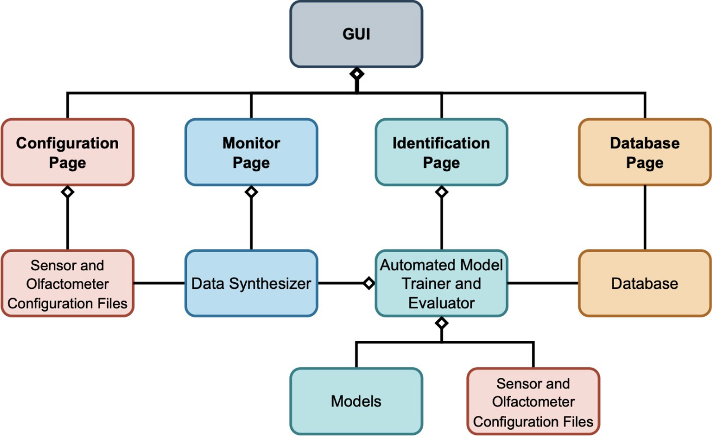
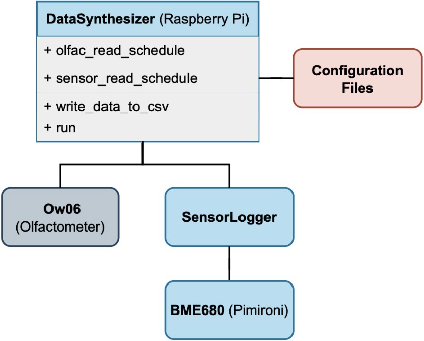
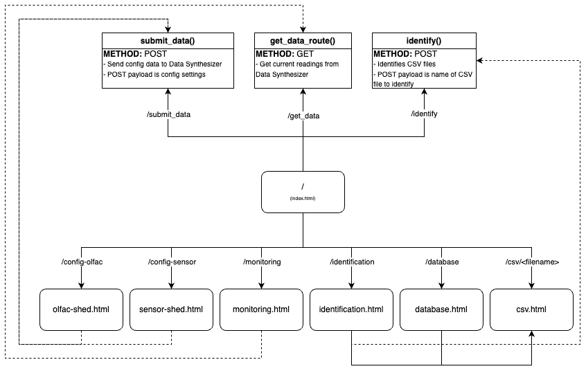

System Architecture

Macro Structure

Data Synthesizer Structure
Web Application Structure
Our web application is structured in the following manner:

The shown APIs allow easy communication between the client and the Data Synthesizer as both are simultaneously running on the Raspberry Pi. Web Application Architecture
Database
Our application has a CSV database that stores all the uniquely identified scents for later use and quick identification. Each row in the CSV file is a record of a scent in this format:
id|name|csv,csv,csvData Synthesizer
The output of the data synthesizer is stored in two seperate folders:
raw and features.
The raw folder contains the raw data from the sensors and olfactometer, while the features folder contains the processed data. The data is stored in CSV format for easy access and manipulation. The CSV files in the raw folder are contain the following fields:
DataPoint|Time(s)|ScentNum|Stabilizing|ChanOn|ScentDuration(s)|Temp(C)|Pressure(hPa)|Humidity(%)|HeaterIdx|HeaterTemp(C)|HeaterDur(ms)|Resistance(Ohm),
while the CSV files in the features folder contain a plethora of fields including the mean, median, mode, standard deviation, and other statistical measures of the raw data.